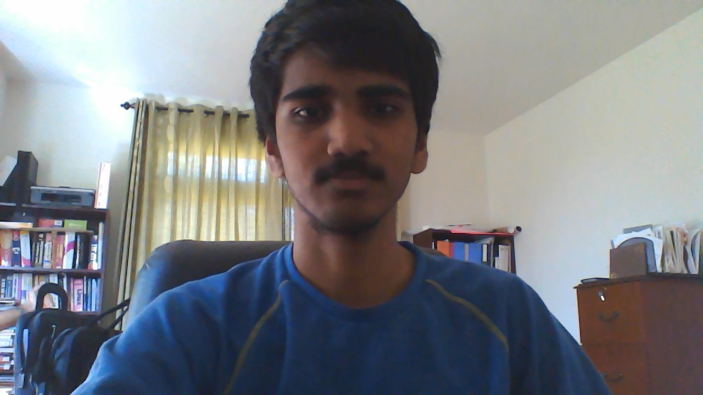

Meet the Team

Name: Aaron Mathieu
Our Supreme Commander
Aaron Mathieu is a biology teacher at Acton-Boxborough
Regional High School in Acton Massachusetts, where he
has been teaching since 2000. During his 18-year teaching
career he has taught biology (including Advanced Placement Biology),
bioethics, chemistry, physics, astronomy, physical science, forensics,
and environmental science. Mr. Mathieu has been working with the
BioBuilder Foundation for 3 years now and is a BioBuilder Master Coach.
Name: Chris Kuffner
Epithet: Senior's last stand
Chris Kuffner has an eternal grudge against fungus.
When he was merely a freshman, an unknown fungus
attacked both of his warm, damp, and vulnerable feet.
He suffered relentless itching for months and vowed
that one day he would kill ALL of the fungi.
Chris sees potential in synthetic biology as the only
solution and has spent years leaning to control its
dark powers. Now, he eats those sorry mushrooms in his
lunch and dinner. Chris has focused his vicious hatred
on research, searching for a deadly sequence.
Name: Justin Hong

Epithet: Not so average high school senior
I joined Biobuilder because of my love for biology and
interest in genetic engineering. I helped out with
brainstorming, labs, and the website for our project.
I like to play tennis, board games like Settlers of Catan,
and of course I love studying biology. Otherwise, I often
play my favorite mobile phone game, Puzzle and Dragons.
Name: Rachel Tao
Epithet: The most ehh person ever
Rachel wants to be the best like no one ever was.
To configure the DNA sequence was her test, to build
proteins was her cause! She travels far and wide, searching
for all gene sequence. She ended up at a obscure location in
a far off region, and began her journey to learn all about
genetic engineering, while testing her knowledge against 8
other wise scientist. After defeating them with higher test
scores, she was able to test whether or not she was the greatest
scientist in the whole world by facing up the 4 elite scientist
in an extreme event of building the most complex genetic engineering
project. After beating all four of them, she thought she was the
world's greatest scientist, but she realized there was one more
scientist greater than her. Gary Oak. She faced him off in an intense
engineering competition. Unfortunately, she lost. However, she found
a BioBuilder club at ABRHS, and decided to refine her skills there,
and re-challenge Gary when her skills grow sharper.
This is written only for Rachel, and not for anyone else.
This is copyrighted, and anyone who steals this and therefore
committing a violation will be fined $100 and sentenced for 14
days in jail.
Name: Anuradha Saini
Epithet: Anuradha Saini
To the naked eye, Anuradha Saini is a shy, fickle
creature, twitching every couple of seconds among other
lousy, less sophisticated students. Also known as the
Supreme Leader, she prefers to be in the company of nerdy
biologists instead of sweaty jocks. To quench her thirst
for science, Anuradha decided to join Biobuilder during
her junior year of high school. Like a flower blooming in
spring, she blossomed while she held hands with her new
partner, E.coli. After watching a highly disturbing safety
video, Anuradha immediately came to the swift conclusion
that her fellow scientists should not face the wrath of
bad safety techniques. After she is kicked out of the
laboratory after Biobuilder meetings, Anuradha prefers to
spend time among Pokemon: Omega Ruby and Alpha Sapphire.
Her favorite region is Hoenn, the region that is superior
to all others. Like her perfect comrades, Julia and Madhuri,
she wishes to become a medical expert one day, even if this
requires eliminating those close to her.
Name: Madhuri Jois
Epithet: Madhuri Jois
Madhuri Jois, Supreme Dictator, enjoys spending
her time reflecting on amazing literature and TV
shows. As a junior exposed to horrible SAT vocab
lists, she has finally discovered that she is a
self-proclaimed misanthrope. She has been in BioBuilder
for two years, but joining the BioBuilder Team was merely
a way for her to design a super organism that will wipe
out the human race, a species that she particularly
despises. One rather fascinating aspect of Madhuri is
she greatly enjoys eating Dove chocolates and reading
the profound statements on the wrappers. Madhuri currently
uses the TV show Avatar: the Last Airbender as a reference
to appropriate human etiquette. In fear of someday becoming
a terrifying crotchety cat lady, she would like to make the
distinction that she would prefer a flying bison as a pet.
She hopes to go to medical school in her future, which,
in this author’s opinion, is to gain a better understanding
of the human body in order to properly eviscerate those who annoy her.
Name: Sarah Bluhm
The one true queen of Westeros.
Sarah Bluhm has a great interest in all sciences. That is why she joined
the ABRHS iGEM. Soon after joining, she realized the diversity of applications for
genetic engineering, and came up with an ingenious idea. She remains in the club
to learn as much as she can about synthetic biology, so that one day the seven kingdoms
will cower in awe of her knowledge, and she will acquire the iron throne, which is rightfully hers!
Name: Peter Wilson
Epithet: 4X Synthetic Biology
Peter Wilson joined Biobuilder to learn basic bioengineering techniques in a
real-world setting, as opposed to the textbooks. Hopefully, someday, bioengineering
might produce a drug (or figure out how to get those microbes in his gut working)
in order to cure his food allergies.
Name: Mayank Mali

Epithet: The Web Designer
Mayank Mali's goal is to master all the STEM disciplines. iGEM and BioBuilder has been his latest victims.
Besides to participating in the transformation (E Chromi) lab, Mayank has developed the website for this team.
Mayank enjoys calculus, coding, and crustaceans, as well as expanding his knowlege of science in general.
Name: Julia Ma
Epithet: Julia Ma
Julia Ma, the Radical Kewl Gerl, spends her
time running away from her problems and invisible
zombies. She joined Biobuilder in an attempt to
create the perfect biological weapon against the zombie menace.
When she’s not obsessively pondering over the various
tactics and strategies of her mortal enemies, she enjoys
knitting stockings to strangle her enemies with. Currently
she is a junior in High School and living in her parents’ basement,
only emerging to design her bio weapon and stock up on spinach
and three cheese Hot Pockets. Eventually, once she gets over her
totally rational fear of invisible zombies and string cheese,
she hopes to spend the rest of her days becoming a doctor.
So once the inevitable zombie apocalypse comes around, she’ll
be the only one who can take the enemy down from the inside out.
Julia Ma is a delusional, zombie-obsessed person, and an absolute
asset to our Biobuilder team.